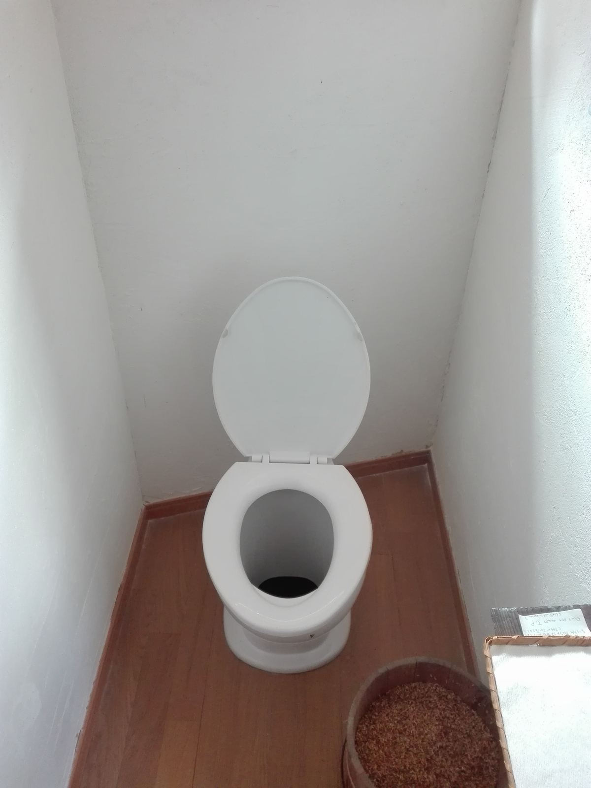
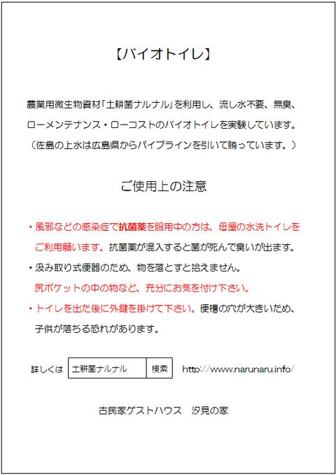
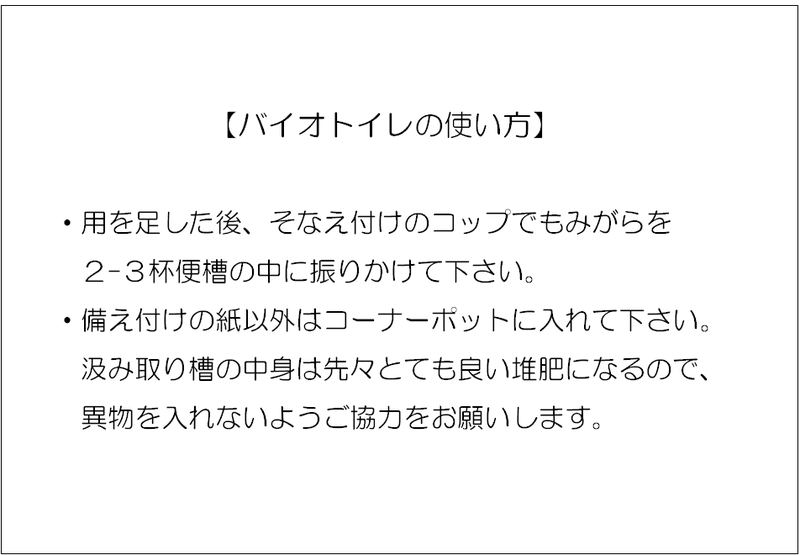

古民家再生の記録
コンポストバイオトイレ
汐見の離れにある昔ながらの汲み取り便所。植物共生細菌、いわゆるエンドファイトの｢土耕菌ナルナル｣を利用したコンポストバイオトイレにリノベしました。ほぼ無臭・ローコスト・ローメンテです。

非水洗洋便器。便槽の穴が大きい！
土耕菌ナルナルは千葉県市原市の土壌菌農法研究者、石井一行さんが発見・製品化した微生物農業資材で、13年の実績があります。
土と作物が元気になるため無肥料・無農薬栽培の強い味方です。千葉県立大網高校の実証栽培では目覚しい結果が出ており、同校は今月25、26日に岡山で開催される日本学校農業クラブ全国大会に出場することになりました。
一昨年、石井さんの会社を訪問した際に大網高校も見学させて頂きましたが、ナルナル菌で育てられた無農薬マスクメロンのまろやかな味は感動的でした。一切農薬・消毒薬を使わないで育てると、メロン独特のピリっとした刺激味がなくなるのですね。
分解力が強いので、トイレに使うと臭いが立たず嵩も増えません。古民家の便槽の大きさならば何年も汲み取りが要らないそうです。汲み取ればとても良い堆肥になります。
使い方は簡単。用を足したあと、備え付けのコップで籾殻を2－3杯便器の中に振りかけるだけです。
ちょっと弱点があります。風邪などで抗生剤を飲んでいる方が使うと、菌が死んで分解しなくなってしまいます。なので、風邪っぴきさんは母屋の水洗トイレをお使い下さい。
また、お尻のポケットからスマホやお財布を落とすとちょっと拾えないので気を付けて下さいね。（臭くないので虫捕り網で探せるかもしれませんが。）


水洗トイレに慣れた身に汲み取り式は最初落ち着きませんが、慣れてくると用を足すごとに大量の上水*を使う水洗トイレが逆に乱暴に思えて来るから不思議です。
ナルナル菌については こちら から！
*上水：瀬戸内気候の上島町は昔から旱魃に悩まされました。今は広島県三原市からの海底パイプライン「友愛の水」で何の心配もなく上水が使えます。上下水道は都道府県管轄なので、県境を越えるのは大変なご苦労があったそうです。